Note
Hello, welcome to the SunFounder Raspberry Pi & Arduino & ESP32 Enthusiasts Community on Facebook! Dive deeper into Raspberry Pi, Arduino, and ESP32 with fellow enthusiasts.
Why Join?
Expert Support: Solve post-sale issues and technical challenges with help from our community and team.
Learn & Share: Exchange tips and tutorials to enhance your skills.
Exclusive Previews: Get early access to new product announcements and sneak peeks.
Special Discounts: Enjoy exclusive discounts on our newest products.
Festive Promotions and Giveaways: Take part in giveaways and holiday promotions.
👉 Ready to explore and create with us? Click [here] and join today!
Fun1 Inflating the Balloon
In this interactive project, we control a balloon’s flight.
Upon clicking the green flag, the balloon will progressively inflate. If the balloon becomes too large, it will burst; if too small, it will fall. Your task is to block the left infrared module at the right moment to make it ascend.
Below are the steps for implementing the project. It is advisable to follow these steps initially, and once familiar, you may alter the effects as desired.
1. Add a Sprite and a Backdrop
Remove the default sprite and click the Choose a Sprite button in the bottom-right corner of the sprite area. Then, select the Balloon1 sprite.
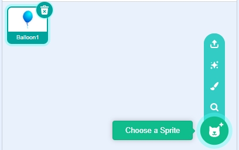
Add a Boardwalk backdrop or another backdrop of your choice through the Choose a Backdrop button.
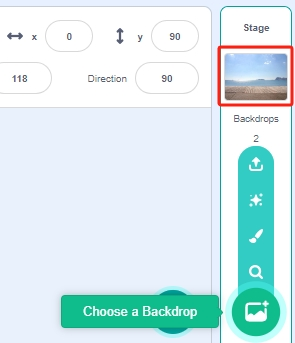
2. Paint a Costume for the Balloon1 Sprite
Now, let’s create an exploding effect costume for the balloon.
Navigate to the Costumes tab for the Balloon1 sprite, click the Choose a Costume button in the bottom left, and select Paint to open a blank Costume. Name it “boom”.
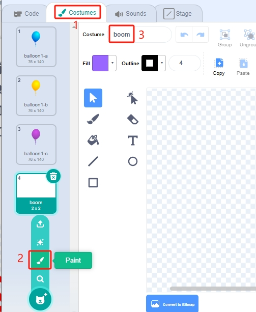
Choose a color and use the Brush tool to draw a pattern.
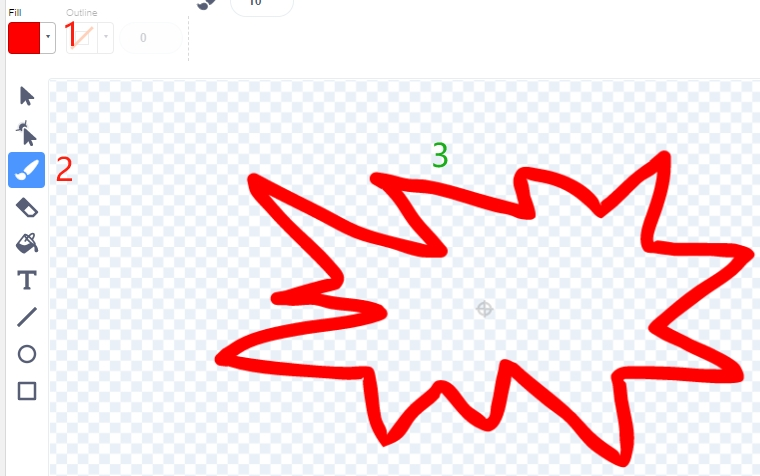
Choose another color, select the Fill tool, and tap inside the pattern to fill it.
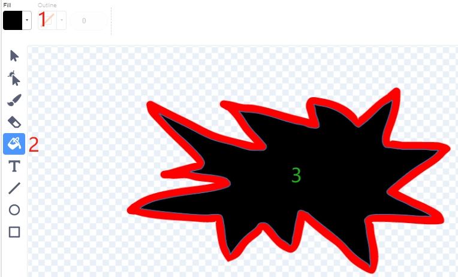
Finally, add the text “BOOM” to complete the explosion effect costume.
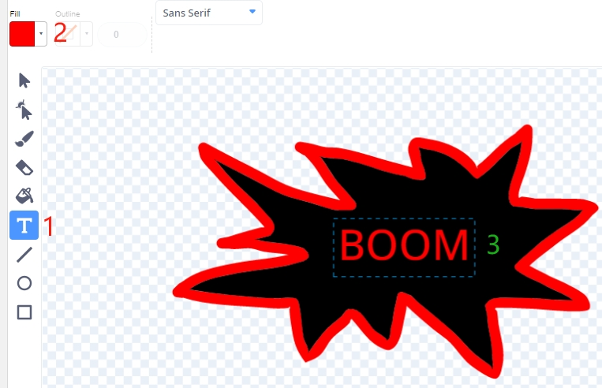
{kind=link}
{kind=link}
{kind=link}
3. Scripting the Balloon Sprite
Initialize the Balloon1 sprite’s position and size.
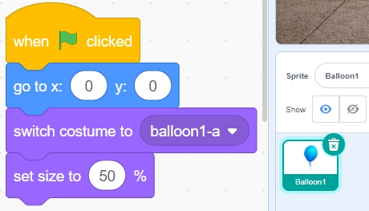
Gradually increase the size of the Balloon sprite.
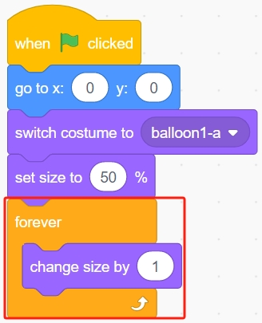
At this point, block the left obstacle avoidance module to stop the Balloon1 sprite from inflating further.
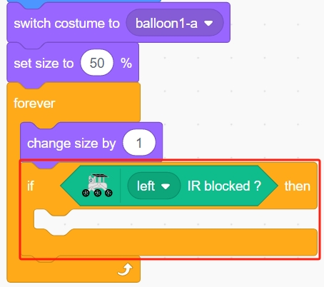
Now, let the Balloon1 sprite decide whether to ascend or descend based on its size.
If the size is less than 90, it will descend (y-coordinate decreases).
If the size is between 90 and 120, it will ascend (y-coordinate increases).
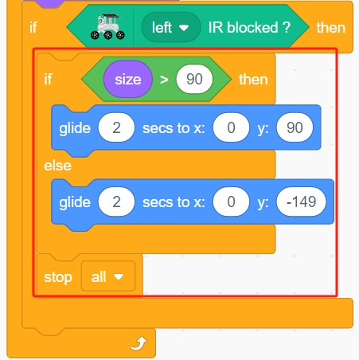
If you fail to block the left obstacle avoidance module, the balloon will continue to inflate until it exceeds a size of 120, at which point it will explode (switch to the explosion effect costume).
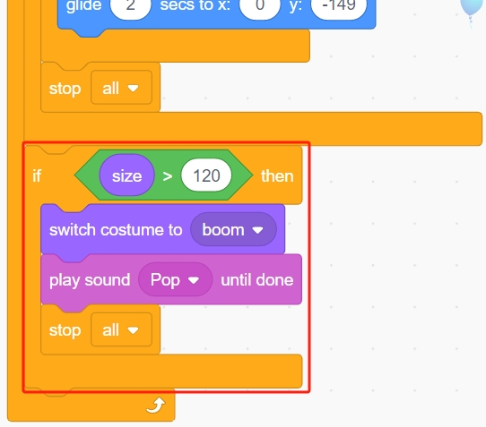
Programming is complete. You can now click the green flag to run the script and see if it achieves the desired effect.